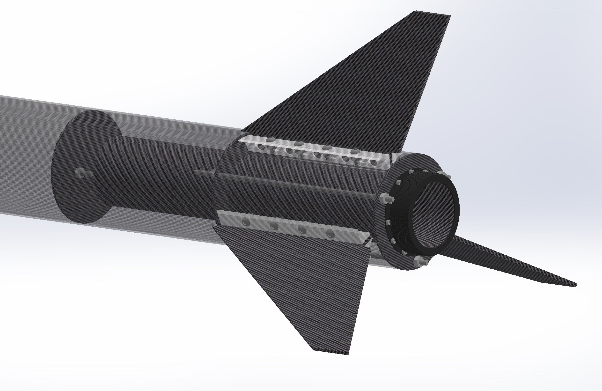
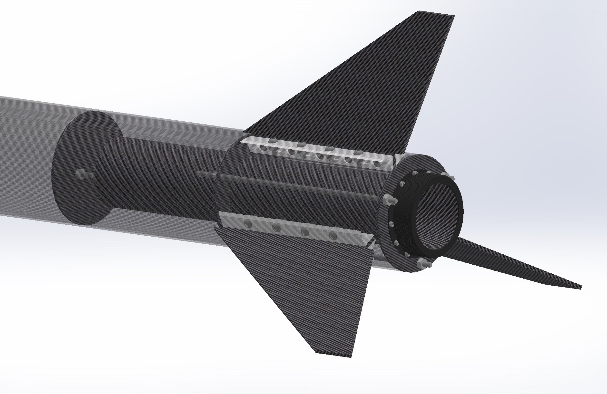

The top photo shows the completed booster section made from 100% in-house manufactured cargon fiber. In the bottom image you can see the CAD model of the booster which was used to aid in the design and manufacturing processes.
 

Photo of the NUSTARS team (Me: center) with the rocket on the launch pad at a test launch on 3/20/2021
The two gif images below show the filament winding process for two of the carbon fiber tubes that were used to construct the launch vehicle